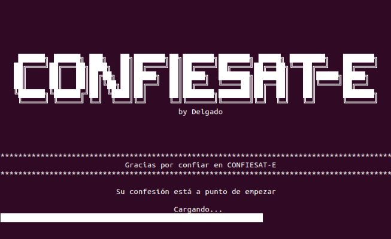
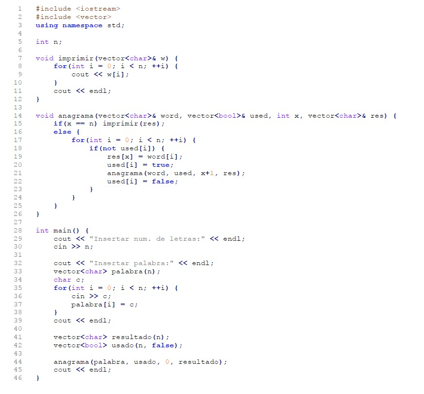
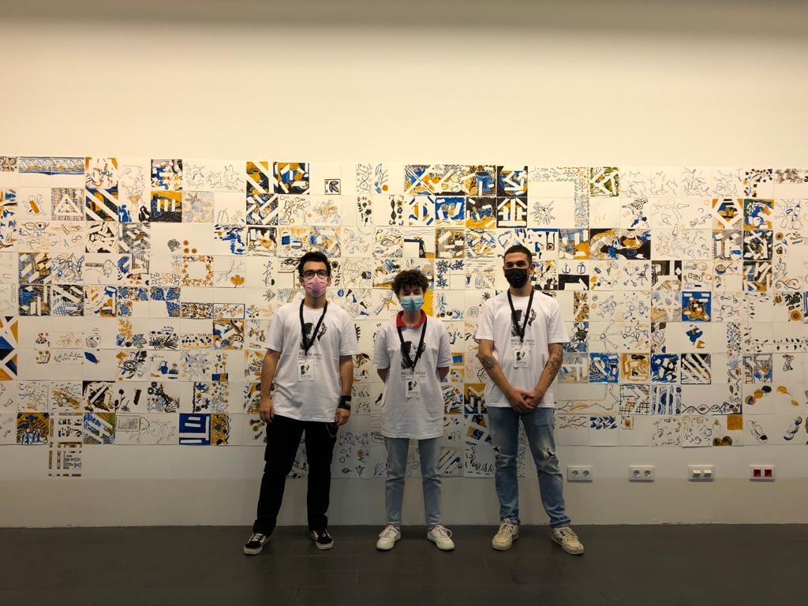
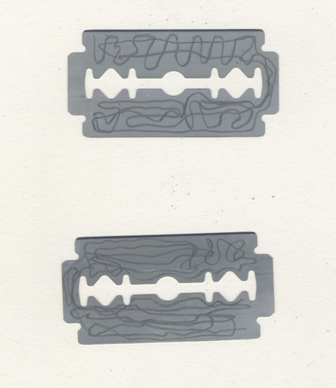
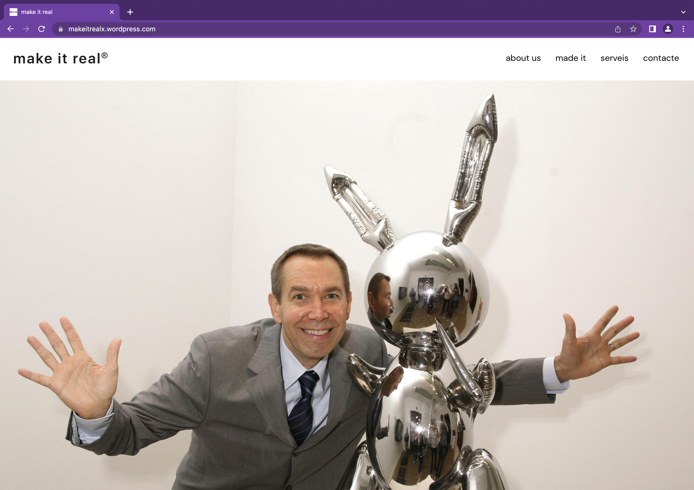

Confiesat-e es un confesionario portátil, ¿qué mejor confidente que este terminal? Guarda con recelo tu secreto... En un 60%.
Las letras se cambian por otras aleatoriamente, modificando el 60% de la confesión.
Se crea una poesía dadaísta a partir de los secretos de los usuarios, funcionando a la vez como una suerte
de Test de Turing y cuestionando nuestras relaciones con la tecnología. ¿Qué serás capaz de contar? ¿Confias en la máquina?

El programa "./anagrama.exe" crea todos los anagramas posibles de una palabra dada. Para una palabra de 'n' letras, la cantidad
de anagramas posibles es n!, que se generan de manera prácticamente automática cuando ejecutamos el programa en el ordenador.
La acción
./anagrama.exe consiste en seguir paso por paso las instrucciones del programa de manera manual con las palabras introducidas
por el público. En las casi tres horas de ejecución, sólo llegué a realizar tres anagramas de la primera palabra.
Algunos anagramas:
Candirú Ilusiones Manzana Núvol Papaya

La Factoría de Narraciones Gráficas explora el trabajo del artista como artesano y en colectivo, y utiliza el azulejo
catalán como marco para integrar tres estrategias planteadas por tres artistas. El público escoge la estrategia que
más le llama la atención para producir su azulejo, que se integra en un mosaico donde todos los azulejos són válidos.
El taller se celebró el 24 de octubre de 2021, durante el festival Barcelona Dibuixa en el espacio del Museo Picasso en
la plaza Jaume Sabartés
En colaboración con:
-Oriol Díaz
-Belén Domínguez

Una radio de trinchera —o Foxhole Radio— es un sencillo dispositivo de recepción de radio. Fueron muy populares entre los soldados en el frente durante la II Guerra Mudial
para recibir notícias, pues el uso de radios convencionales estaba prohibido. Quizá su elemento más curioso y característico sea la cuchilla de afeitar, que junto al grafito de un lápiz,
hace la función de diodo. Ahora bien, el punto en el que la cuchilla y el lápiz hacen su función, debe encontrarse. Es por ello que el lápiz se va moviendo sobre la cuchilla,
buscando el lugar, creando sobre ella el pequeño dibujo de un mapa, de un tortuoso camino hacia el contacto.
Este viaje encarna el interés central de Foxhole Radio. Es el intento desesperado de romper un estado de aislamiento y solipsismo, tratar de conectar con un mundo exterior.
Las comunicaciones flotan en el aire, pero hay que buscarlas, y tratando de buscar un punto preciso, el movimiento sobre una pequeña cuchilla se convierte en una deriva en un
mar enorme. En la búsqueda se captarán fragmentos, atisbos, y ruido. Sobretodo ruido. Es fácil fracasar y la frustración está garantizada. Pero se debe insistir con ahínco.

makeitreal® es una empresa dedicada a crear artistas de éxito. Han desarrollado una inteligencia artificial especialmente alimentada con todos los discursos institucionales
del panorama artístico catalán, de manera que es capaz de crear para cualquier obra un texto especialmente diseñado para catapultarte a la fama. Da igual cuál sea tu pieza, lo importante
es cómo se vende, por eso
makeitreal® se asegura de incluir en la justificación de la obra todos los tags de moda para que la institución pueda frivolizar luchas reales subiéndose al carro
de distintos frentes sociales que puede banalizar entre sus muros.
En colaboración con Ana Ventura.
makeitreal®

El Camp es un proyecto sobre memoria en un escenario clave de la Guerra Civil. Una serie de soldados esparcidos por el paisaje representados por su arma —una imagen del fusil Mauser— desaparecen paulatinamente, fundiéndose a blanco, y dejando sólo sus fantasmas como recuerdo de lo ocurrido. Es un proyecto de cultivo a la inversa. Empieza plantando frutos que irán desapareciendo hasta volverse la nada. Una nada que no es verdaderamente nada, porque nada puede ser nada, y siempre queda una algo de lo que algo fue.
El Camp —de cultivo/de batalla— es un acto de violencia. Una agresión hacia el suelo. Violación del territorio para introducir a la fuerza piezas en la tierra que resignifican lo que la tierra había sido. Ahora es un campo, y lo será por mucho tiempo. Pero la imagen se va borrando con el tiempo, hasta que solo queda un espectro, un estandarte tétrico, bandera blanca e incertidumbre sobre lo ocurrido. Pero el fantasma sigue allí apostado.
En proceso